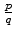

| Problem D - Continuous Fractions |
where the ai's are integer numbers.
The previous continuous fraction could be noted as [a1, a2,..., an]. It is not difficult to show that any rational number , with integers p > q > 0, can be represented in a unique way by a simple continuous fraction with n terms, such that = [a1, a2,..., an-1, 1], where n and the ai's are positive natural numbers.
Your task is to find and print the simple continuous fraction that corresponds to a given rational number.
Input will consist of a series of cases, each one in a line. A line describing a case contains p and q, two integer numbers separated by a space, with 1020 > p > q > 0.
The end of the input is indicated by a line containing 0 0.
Cases must be analyzed in the order that are read from the input. Output for each case will consist of several lines. The first line indicates the case number, starting at 1, using the format:
Case i:
replacing i by the corresponding case number. The second line displays the input data in the form
p / q.
The remaining lines must contain the continuous fraction corresponding to the rational number, , specified in the given input line. The continuous fraction must be printed accordingly to the following rules:
75 34 65 60 0 0
Case 1: 75 / 34 ..........1...... 2.+.------------- ............1.... ....4.+.--------- ..............1.. ........1.+.----- ................1 ............5.+.- ................1 Case 2: 65 / 60 ......1... 1.+.------ .........1 ....11.+.- .........1